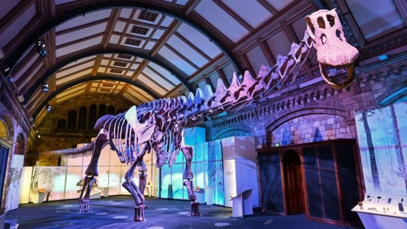
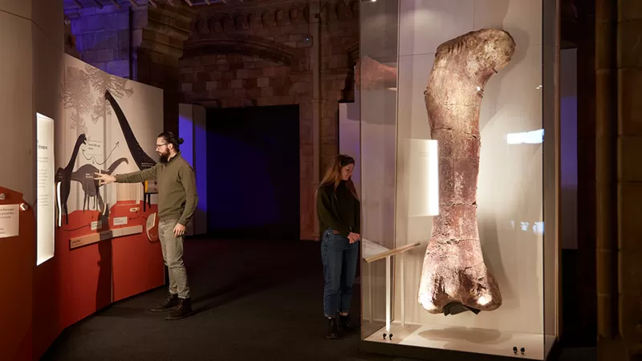
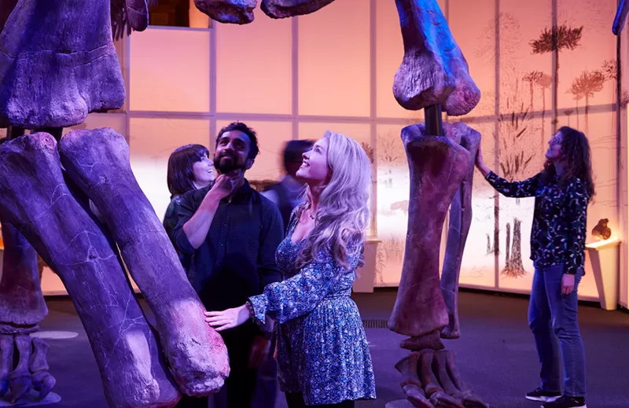
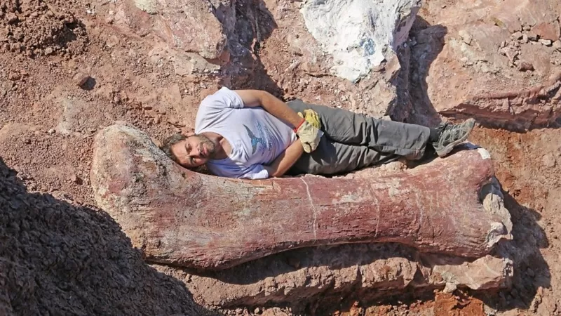

El colosal dinosaurio de Argentina que llega al Museo de Historia Natural de Londres
Un coloso ha aterrizado en Londres directamente desde Argentina. El esqueleto de lo que fue uno de los animales más grandes que jamás haya caminado sobre la Tierra ahora está en exhibición en el Museo de Historia Natural británico.
El patagotitan fue un dinosaurio que vivió hace 100 millones de años en América del Sur. Con una longitud de 37 m desde la nariz hasta la cola, podía llegar a un peso de hasta 60 o 70 toneladas. Además de presentar un esqueleto representativo, el Museo también expone algunos de los huesos fósiles reales descubiertos por primera vez en Argentina en 2014.
El más grande es un fémur de 2,4 m de largo. Se ha colocado en posición vertical para brindarles a los visitantes una extraordinaria oportunidad de tomar selfies.
"El patagotitan era lo que llamamos un dinosaurio saurópodo", explicó el paleontólogo Paul Barrett."Es un pariente del diplodocus, con el que podrías estar un poco más familiarizado. Es uno de estos grandes animales con cuerpo de barril y patas robustas. Casi parece un elefante gigante cruzado con una serpiente anaconda, con un cuello muy largo y una cola larga", dijo a la BBC. La réplica del esqueleto es un préstamo del Museo Paleontológico Egidio Feruglio (MEF) de Argentina, cuyo personal desenterró los fósiles originales.
El reto de montarlo
El museo londinense tuvo que ponerse a pensar mucho para encontrar la mejor manera de exhibir a la criatura. Apenas cabe en su Galería Waterhouse, su mayor espacio de exposiciones. Incluso entonces, el extremo de la cola ha tenido que ser doblada alrededor de una columna. El suelo también necesitaba ser reforzado, pero, inteligentemente, los ingenieros han podido ocultar parte de la armadura de soporte para que parezca que el dinosaurio está caminando sobre la alfombra.
"Ha sido todo un desafío, solo superado por la ballena azul que fue colgada del techo en el Salón Hintze del museo", dijo el jefe de producción técnica, Jez Burn. El esqueleto está acompañado por muchos videos y juegos interactivos que explican las historias de vida de los saurópodos gigantes que vivieron en el Período Cretácico de la historia de la Tierra.
¿Es el más grande?
Es difícil decir quién fue exactamente el más grande de estos titanosaurios, pero animales como el patagotitan y otra criatura llamada argentinosaurus estaban entre los primeros. "Lo increíble del patagotitan es la cantidad de huesos del dinosaurio que se encontraron", dijo Sinéad Marron, promotora de la exposición.
"Los otros dinosaurios gigantes se conocen a partir de unos pocos fragmentos, mientras que el esqueleto del patagotitan se conoce a partir de un par de cientos de huesos de al menos seis individuos diferentes. Simplemente sabemos más sobre Patagotitan que todos los demás gigantes".
Los científicos no están seguros de por qué los titanosaurios eran tan grandes, pero tienen una buena idea de cómo desarrollaron su inmenso volumen. Esto probablemente tenía algo que ver con los alimentos vegetales de calidad relativamente baja disponibles para ellos, que requerían un gran sistema digestivo para aprovecharlos al máximo. Esencialmente, eran tanques de fermentación gigantes sobre patas robustas.
Los visitantes del Museo tendrán oportunidad de tocar unos tubos que simulan los intestinos de un titanosaurio. Y podrán escuchar los ruidos de la barriga del enorme animal. Una criatura tan grande como el patagotitan habría tenido que comer todo el día y la mayor parte de la noche para mantenerse bien. Según un cálculo, el animal podría haber consumido más de 130 kg de plantas todos los días. Esto es equivalente a aproximadamente 515 lechugas redondas.